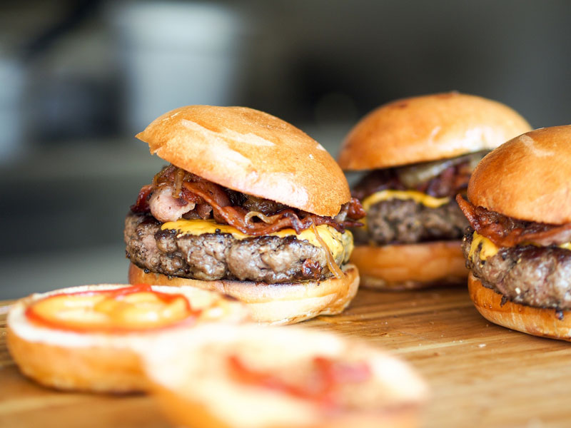

We start our day at the crack of dwan to bake our own muffins, bread, and dinner rolls. Loaves not used that day are donated to the local food shelter.
Not only is our food good, It's also good-looking! Our patrons often stop to admire our food with a quick instagram before digging in. We've collected a few of our favorite shots here.
We start our day at the crack of dwan to bake our own muffins, bread, and dinner rolls. Loaves not used that day are donated to the local food shelter.

People come from all over to enjoy our lovingly made burgers. We grind our own locally sourced organic beef and turkey so you know it's fresh and free from fillers and other nonsense. Go for one of our creative topping combos or stick with the clascis.

Our chef works with local fishermen to pick the freshest the sea has to offer for our daily seafood special. Our Roast Cod Caponata with Roasted Potates is an old favorite with our regualrs.